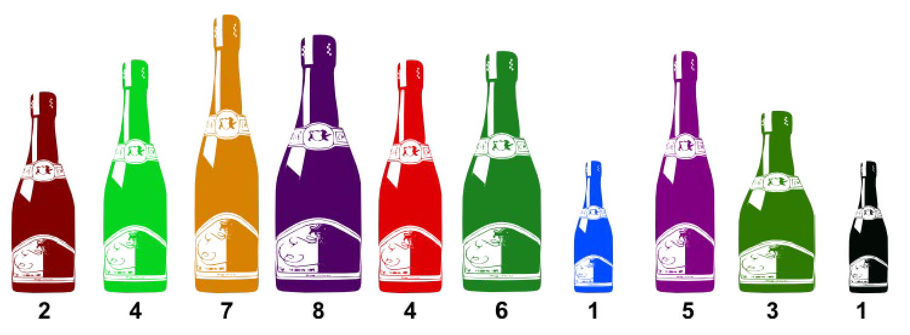
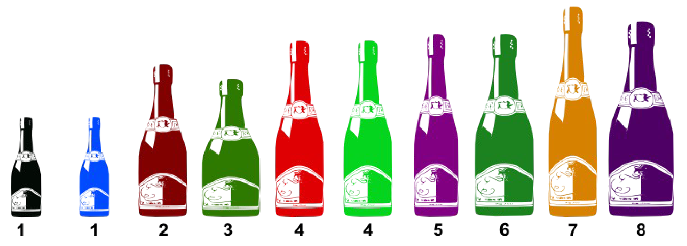
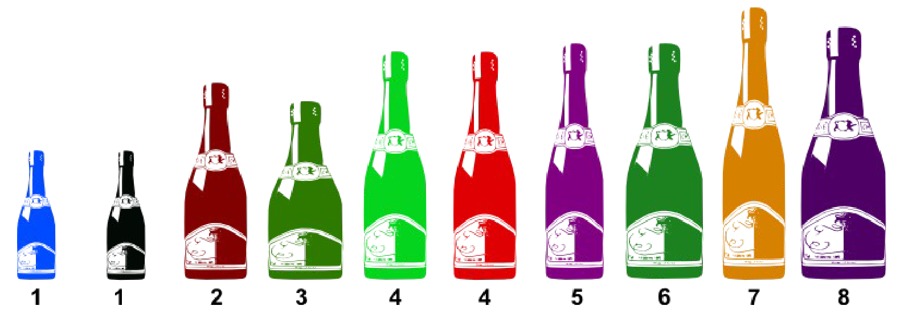
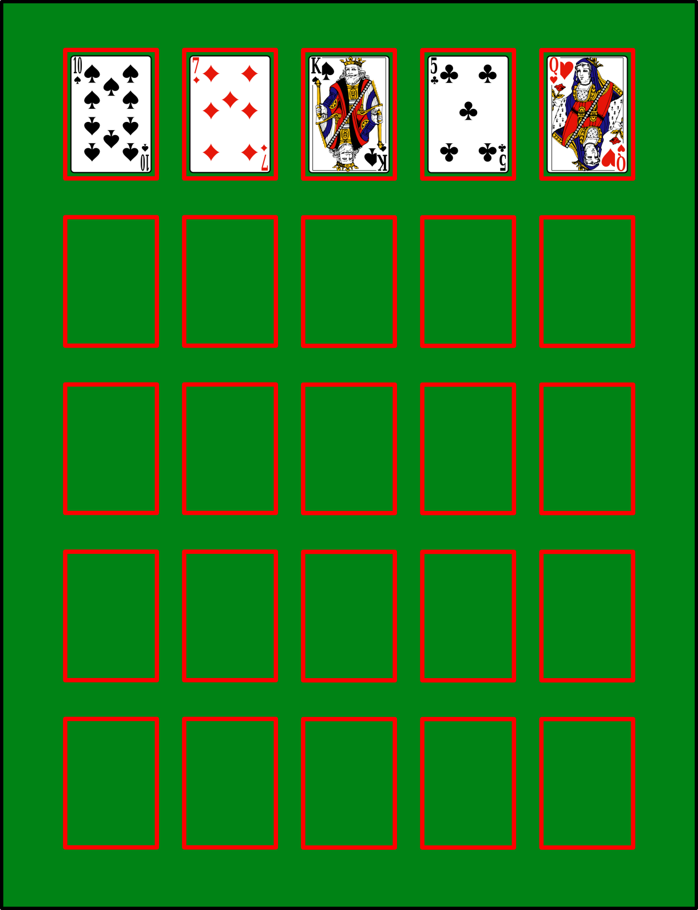
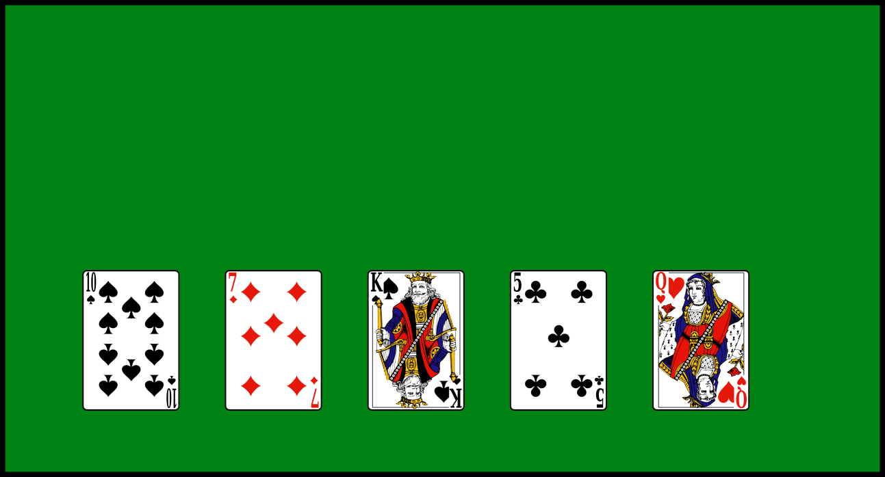
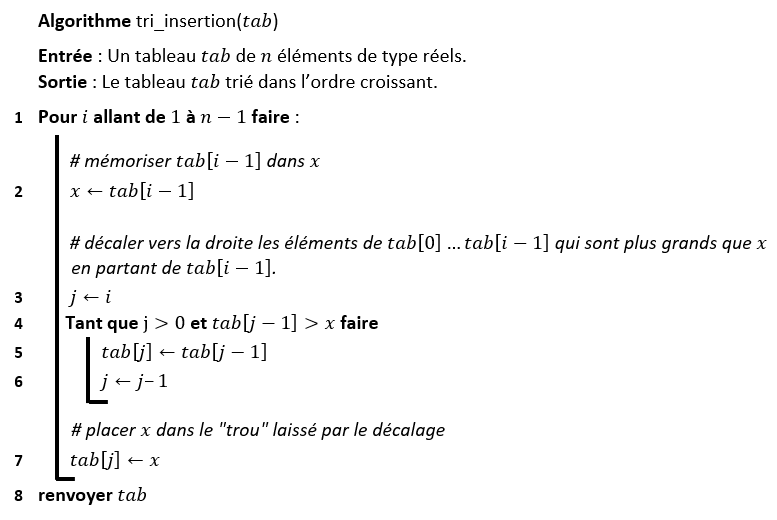
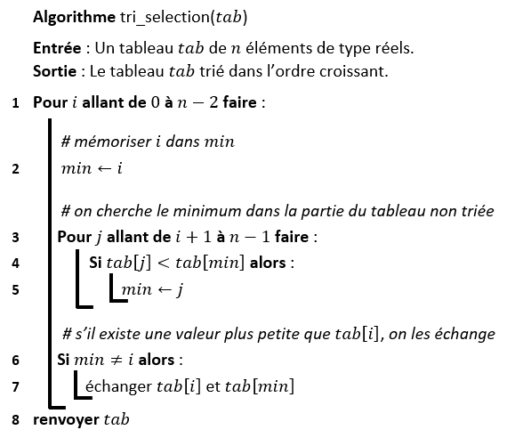
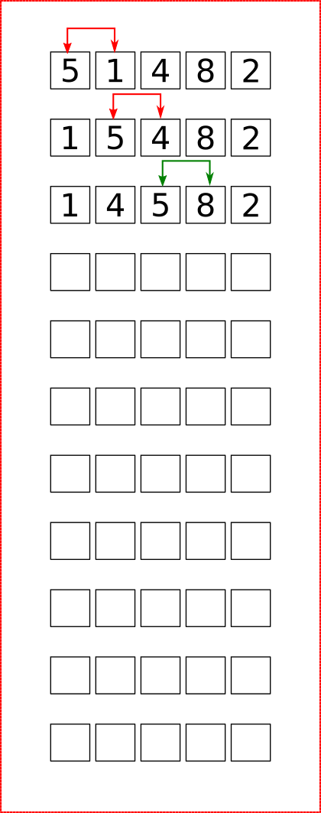

Premiers algorithmes de tri
Introduction
Un peu d'histoire
\(~~~~\) Betty Holberton \(~~~~~\) \(~~\)(1917-2001) \(~~~~~\) \(~~~~~\)Informaticienne
Betty Holberton est connue pour avoir été l’une des six programmatrices originelles de l’ENIAC, le premier ordinateur électronique. Lors de son premier jour de cours à l’université de Pennsylvanie, son professeur de maths lui demande si elle ne serait pas mieux à la maison à élever des enfants. Cela la pousse à continuer ses études en mathématiques, tout en choisissant le journalisme comme option majeure (le journalisme était l’un des seuls domaines ouverts aux femmes en 1940). Pendant la Seconde Guerre Mondiale, elle est embauchée par la Moore School of Electrical Engineering en tant que calculatrice. Elle est vite choisie pour être l’une des six programmatrices de l’ENIAC, avec Kay McNulty, Marlyn Wescoff, Ruth Lichterman, Betty Jean Jennings, et Fran Bilas. Elle y développe le premier code de construction, la première routine de tri et la première application logicielle. Après la guerre, en 1959, elle est nommée directrice de la branche Recherche en Programmation du David Taylor Model Basin, laboratoire de mathématiques appliquées. Elle participe également à développer l’Univac (la division informatique de Remington Rand). En 2001, celle qui est considérée comme la pionnière du logiciel par Donald E. Knuth meurt d’une maladie cardiaque à l’âge de 84 ans. source : Wikipedia
Pourquoi trier ?
Le "tri" est l’opération consistant à ordonner un ensemble d'éléments. Les algorithmes de tri ont une grande importance pratique. Ils sont fondamentaux dans certains domaines, comme l'informatique de gestion où l'on tri de manière quasi-systématique des données avant de les utiliser. L'étude du tri est également intéressante en elle-même car il s'agit sans doute du domaine de l'algorithmique qui a été le plus étudié et qui a conduit à des résultats remarquables sur la construction d'algorithmes et l'étude de leur complexité.
Stabilité des algorithmes de tri
On dit qu'un algorithme de tri est stable s'il ne modifie pas l'ordre initial des clés identiques. Par exemple, imaginez que vous vouliez trier la collection de bouteilles ci-dessous par ordre de volume (le volume est indiqué sous la bouteille) :

Si vous obtenez ceci, alors votre tri n'était pas stable :

En effet, la bouteille noire de volume 1 se trouve maintenant avant la bouteille bleue de même volume alors qu'elle devrait être après. Il en est de même pour les deux bouteilles de volume 4 qui sont inversées par rapport à l'ordre initial. Avec un tri stable, on aurait obtenu :

L'intérêt d'un tri stable est qu'on peut appliquer ce tri successivement, avec des critères différents. Imaginez, par exemple, que dans le cadre d'une campagne de prévention, vous vouliez trier une liste de personnes en fonction de la catégorie d'âge. Vous obtenez une liste avec les personnes les plus âgées en premier. Si maintenant, vous voulez re-trier cette liste en fonction du poids, par exemple, vous aurez, si l'algorithme de tri est stable, les personnes les plus lourdes en premier et, pour les personnes de même poids, celles qui sont les plus âgées en premier. Ce qu'un algorithme non-stable ne garantirait pas.
Tri en place
Un tri est dit en place s’il n’utilise qu’un nombre très limité de variables et qu’il modifie directement la structure qu’il est en train de trier. Ceci nécessite l’utilisation d’une structure de donnée adaptée (un tableau par exemple). Aucune copie n'est réalisée. Ce caractère peut être très important si on ne dispose pas de beaucoup de mémoire.
Trier de manière naturelle : les algorithmes naïfs
Trier à la main
On donne une main de 5 cartes d'un jeu de 54 cartes. Trier les cartes par ordre croissant, sans tenir compte des couleurs. Vous devrez marquer dans le tableau suivant l'ensemble des changements de positions des cartes dans votre main :

Avez-vous tous utilisé la même méthode ?

Le tri par insertion
Le tri par insertion est le tri que la majorité des joueurs de cartes occasionnels pratiquent intuitivement. Il consiste à «traiter» toutes les cartes dans l’ordre découlant de la donne, le «traitement» se résumant, pour chaque carte, à l’insérer au bon endroit dans l’ensemble des cartes déjà triées.
Principe
Le principe du tri par insertion est assez naturel. On prend les cartes une par une en commençant par la première.
- Au départ la première est supposée à sa place. On regarde la deuxième et on compare à la première, on échange si besoin. Les deux premières cartes sont donc rangées dans l'ordre.
- On regarde la troisième, on compare aux précédentes en partant de la plus proche de celle-ci et on échange si l'ordre n'est pas bon. Si l'on n'échange pas cela signifie que l'on peut passer à la carte suivante. Maintenant les 3 premières cartes sont rangées.
- On regarde la 4ème carte et on la fait ainsi descendre à la position qui lui correspond...les 4 premières cartes sont rangées.
- On poursuit ainsi jusque la dernière carte.

pseudo-code
Pseudo-code de l'algorithme présenté :

Remarques
Le tri par insertion est un tri :
- stable (conservant donc l'ordre d'apparition des éléments égaux);
- en place (l'algorithme n'utilise pas de tableau auxiliaire);
- online, c'est-à-dire que l'algorithme peut recevoir la liste à trier élément par élément sans perdre en efficacité contrairement à un tri offline qui requiert que l'intégralité de la liste à trier soit fournie avant qu'il puisse commencer à la trier.
Exercice 1 ⭐
Implémenter en Python une fonction de signature tri_insertion(tab: list) -> list
Complexité
Calculons la complexité du tri par insertion. Dans le pire cas, on fait toutes les comparaisons, autrement dit, le tableau est initialement trié dans l'ordre décroissant. Dans cet algorithme, on a :
- Calcul de la longueur d'une liste
- Itération d'un entier
- Opération arithmétique
- Accès à un élément de tableau
- Affectations d'un réel
- Comparaison de deux réels
- Renvoi d'une valeur en fin d'algorithme
| Ligne | Calcul longueur | Itération | Opération arithmétique |
Accès tableau |
Affectation de réels |
Comparaison de réels |
Renvoi de valeur |
|---|---|---|---|---|---|---|---|
| 1 | \(1\) | \(n-1\) | \(\,\,\,\,\,\,\,\,\,\,\,\,\,\,\,\,\,\,\,\,\,\,\,\,\,\,\,\,\,\,\) | ||||
| 2 | \(n-1\) | \(n-1\) | \(n-1\) | ||||
| 3 | \(n-1\) | ||||||
| 4 | \(\displaystyle\frac{n(n+1)}{2}-1\) | \(\displaystyle\frac{n(n+1)}{2}-1\) | \(n(n+1)-2\) | ||||
| 5 | \(\displaystyle\frac{(n-1)n}{2}\) | \((n-1)n\) | \(\displaystyle\frac{(n-1)n}{2}\) | ||||
| 6 | \(\displaystyle\frac{(n-1)n}{2}\) | \(\displaystyle\frac{(n-1)n}{2}\) | |||||
| 7 | \(n-1\) | \(n-1\) | |||||
| 8 | \(1\) | ||||||
| Total | \(1\) | \(n-1\) | \(\displaystyle\frac{3}{2}n^2+\displaystyle\frac{1}{2}n-2\) | \(\displaystyle\frac{3}{2}n^2+\displaystyle\frac{3}{2}n-3\) | \(n^2+2n-3\) | \(n^2+n-2\) | \(1\) |
Ainsi, le temps d'exécution de cet algorithme au pire des cas est \(5n^2+6n-9\). La fonction de complexité du tri par insertion est un polynôme du second de degré. La complexité de cet algorithme est donc quadratique.
Le tri par sélection
Principe
Sur un tableau de \(n\) éléments (numérotés de \(0\) à \(n−1\)), le principe du tri par sélection est le suivant :
- Rechercher le plus petit élément du tableau, et l’échanger avec l’élément d’indice \(0\).
- Rechercher le second plus petit élément du tableau, et l’échanger avec l’élément d’indice \(1\).
- Continuer de cette façon jusqu’à ce que le tableau soit entièrement trié.

pseudo-code
Pseudo-code de l'algorithme présenté :

Remarques
- Il existe une variante qui consiste à procéder de façon symétrique, en plaçant d'abord le plus grand élément à la fin, puis le second plus grand élément en avant-dernière position, etc.
- Le tri par sélection est un tri :
- instable par défaut (mais peut être rendu stable) ;
- en place ;
- offline, puisque l'algorithme doit recevoir l'intégralité de la liste à trier avant qu'il puisse commencer à la trier.
Exercice 2 ⭐
Implémenter en Python une fonction de signature tri_selection(tab: list) -> list
Complexité
Calculons la complexité du tri par sélection. Dans le pire cas, on effectue le plus d'affectations possibles, autrement dit, le tableau est initialement trié dans l'ordre décroissant. Dans cet algorithme, on a :
- Calcul de la longueur d'une liste
- Itération d'un entier
- Opération arithmétique
- Accès à un élément de tableau
- Affectations d'un réel
- Comparaison de deux réels
- Renvoi d'une valeur en fin d'algorithme
| Ligne | Calcul longueur | Itération | Opération arithmétique |
Accès tableau |
Affectation de réels |
Comparaison de réels |
Renvoi de valeur |
|---|---|---|---|---|---|---|---|
| 1 | \(1\) | \(n-1\) | \(1\) | \(\,\,\,\,\,\,\,\,\,\,\,\,\,\,\,\,\,\,\,\,\,\,\,\,\,\,\,\,\,\,\) | |||
| 2 | \(n-1\) | ||||||
| 3 | \(\displaystyle\frac{(n-1)n}{2}\) | ||||||
| 4 | \((n-1)n\) | \(\displaystyle\frac{(n-1)n}{2}\) | |||||
| 5 | \(\displaystyle\frac{(n-1)n}{2}\) | ||||||
| 6 | \(n-1\) | ||||||
| 7 | \(4(n-1)\) | \(3(n-1)\) | |||||
| 8 | \(1\) | ||||||
| Total | \(1\) | \(\displaystyle\frac{1}{2}n^2+\displaystyle\frac{1}{2}n-1\) | \(1\) | \(n^2+3n-4\) | \(\displaystyle\frac{1}{2}n^2+\displaystyle\frac{7}{2}n-4\) | \(\displaystyle\frac{1}{2}n^2+\displaystyle\frac{1}{2}n-1\) | \(1\) |
Ainsi, le temps d'exécution de cet algorithme au pire des cas est \(\displaystyle\frac{5}{2}n^2+\displaystyle\frac{15}{2}n-7\). La fonction de complexité du tri par sélection est un polynôme du second de degré. La complexité de cet algorithme est donc quadratique.
Un autre algorithme de tri : le tri à bulle
Principe
L'algorithme de tri à bulles consiste à trier la liste en n'autorisant qu'à intervertir deux éléments consécutifs de la liste. On peut le décrire comme ceci:
- Parcourir tout le tableau et comparer les éléments consécutifs.
- Lorsque deux éléments sont dans le désordre, les inverser.
- Une fois la fin du tableau, recommencer.
- S'arrêter dès qu'un parcours du tableau n'a échangé aucun élément.

Exercice 3 ⭐⭐
- Effectuer le tri à bulle du tableau
[5, 1, 4, 8, 2].

- Pourquoi, à votre avis, appelle-t-on ce tri un « tri à bulle » ?
- Quelle propriété a-t-on après un parcours complet d'un tableau ?
- Ecrire un algorithme représentant un tri à bulle.
- Quelle est la complexité de cet algorithme ?
- Implémenter une fonction python de signature
tri_bulle(tab: list) -> list.
Les tris fournis par Python
Il existe d’autres algorithmes de tris et certains sont (beaucoup) plus efficaces (leur coût est de l’ordre de \(n\operatorname{log_{2}}(n)\) qui est inférieur à \(n^2\)). Python fournit notamment des fonctions permettant de trier de manière plus efficace un itérable.
La méthode sort()
Python trie les tableaux avec la méthode list.sort() (tri en place, le tableau est mis à jour) :
>>> tableau = [3, 4, 0, 2, 1]
>>> tableau.sort()
>>> tableau
[0, 1, 2, 3, 4]
Remarque
Il faut toutefois que les éléments du tableau soient comparables les uns avec les autres.
Par exemple, les str et les int sont deux types comparables, Python peut évaluer les expressions 'allo' < 'hello' et 3 < 5. Les tableaux ['allo', 'hello'] et [3, 5] peuvent donc être triés.
Par contre, le tableau ['allo', 'hello', 3, 5] ne peut pas être trié car 'allo' et 3 ne sont pas comparables.
La fonction sorted
Il est aussi possible de trier des list ou d'autres types de données tels que les tuple et les dict en utilisant la fonction sorted.
Dans ce cas, Python crée un nouveau tableau contenant les mêmes valeurs que l'argument et le trie.
La fonction renvoie la copie triée, l'argument initial n'est pas modifié.
>>> un_tuple = (3, 4, 0, 2, 1)
>>> sorted(un_tuple)
[0, 1, 2, 3, 4]
>>> un_tuple
(3, 4, 0, 2, 1)
Attention
Dans le cas ou l'argument est un dictionnaire, sorted renvoie le tableau des clés trié dans l'ordre croissant :
>>> dictionnaire = {'Nicolas': 30, 'Élodie': 5}
>>> sorted(dictionnaire)
['Nicolas', 'Élodie']
'É' (de code 201) soit supérieur à 'N' (de code 78) !
Dans les deux cas il est possible de passer un booléen reverse en argument. Si l'on passe reverse=True, le tri se fera dans l'ordre décroissant. Par défaut on a reverse=False (tri dans l'ordre croissant).
>>> tableau = [3, 4, 0, 2, 1]
>>> tableau.sort(reverse=True)
>>> tableau
[4, 3, 2, 1, 0]
Si l'on fournit des données structurées à la fonction de tri (des list ou des tuple par exemple), le tri se fera tout d'abord sur le premier élément de chaque donnée, puis sur le deuxième etc :
>>> tableau = [("Alphonse", 100), ("Zélie", 0), ("Alphonse", 50)]
>>> tableau.sort()
>>> tableau
[('Alphonse', 50), ('Alphonse', 100), ('Zélie', 0)]
Il peut arriver que l'on souhaite trier le tableau selon un critère particulier.
C'est le cas par exemple si les données sont des couples de valeurs et que l'on souhaite effectuer le tri sur la seconde valeur de chaque couple.
Dans ce cas on utilise le mot-clé key et l'on passe en argument une fonction qui renvoie la seconde valeur de chaque couple :
Dans l'éditeur :
def second(couple):
return couple[1]
Dans la console :
>>> tableau = [("Alphonse", 100), ("Zélie", 0), ("Alphonse", 50)]
>>> tableau.sort(key=second)
>>> tableau
[('Zélie', 0), ('Alphonse', 50), ('Alphonse', 100)]
Remarque
L'algorithme de tri utilisé par Python est le Tim Sort créé par Tim Peters en 2002. On retrouve cet algorithme dans Java, Javascript, Swift et Rust. Cet algorithme part de l'hypothèse que, dans la majorité des cas, les données à trier comprennent des plages déjà triées. On peut imaginer la situation d'un magasin qui, jour après jour, ajoute ses ventes quotidiennes à un tableau préexistant et le trie. Chaque matin, le tableau initial est trié, seules les valeurs du jour sont à trier. Dans ce cadre, le Tim Sort profite des qualités de deux tris étudiés en NSI :
- le tri par insertion est très efficace dans le cas de petits tableaux presque triés mais pas dans le cas de grands tableaux ;
- le tri fusion est très efficace dans le cas de grands tableaux mais pas pour de petits tableaux.
- parcourir le tableau et y repérer des plages déjà triées ou presque ;
- si besoin, trier ces plages à l'aide du tri par insertion ;
- fusionner ces plages à l'aide de l'opération de fusion du tri fusion.
Résumé
Résumé
Dans ce chapitre, j'ai appris :
- que le tri par sélection et le tri par insertion sont deux algorithmes de tri élémentaires qui peuvent être utilisés pour trier des tableaux ;
- que ces deux algorithmes ont un coût quadratique dans le pire cas et qu'ils restent peu efficaces dès que les tableaux contiennent plusieurs milliers d’éléments ;
- qu'il existe de meilleurs algorithmes de tri, plus complexes, dont celui offert par Python avec les fonction
.sort()etsorted(); - qu'il est possible de trier n'importe quel itérable avec ces deux fonctions selon un critère particulier : il suffit de leur passer en paramètre une fonction clé qui définit les critères de tri souhaité.